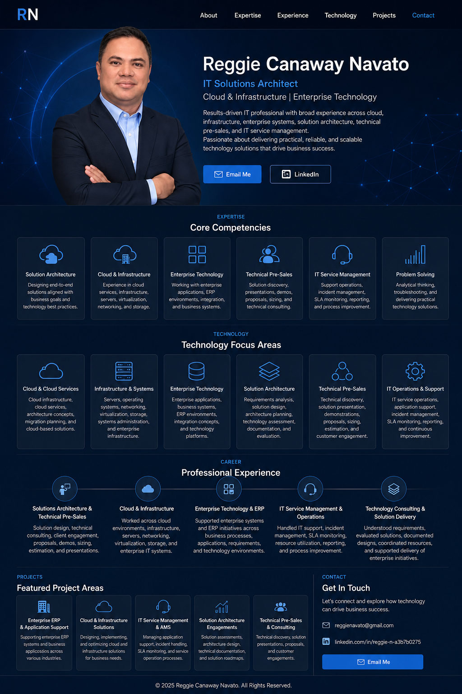

An IT professional with a career spanning infrastructure, cloud, enterprise technology, and solution consulting. helping organizations evaluate technology and turn requirements into workable solutions.

My career in IT started with infrastructure and systems — long before cloud computing became the norm. Over the years, my work evolved from hands-on technology and infrastructure into cloud services, enterprise applications, solution architecture, and technical pre-sales.
Today, I work at the intersection of technology and business. I enjoy understanding what an organization is trying to accomplish, looking at the technology behind the requirement, and helping build a solution that is practical to implement and support.
I don't believe every business problem needs the newest technology. The right solution is the one that fits the requirement, budget, environment, and people who will operate it.
Technology should solve a business problem. I combine technical understanding, infrastructure knowledge, enterprise technology, solution architecture, and stakeholder engagement to help organizations make informed and practical technology decisions.
Translating business and technical requirements into structured, practical, and supportable technology solutions.
Infrastructure services, cloud environments, virtualization, servers, networking, storage, systems, and enterprise technology platforms.
Enterprise applications, business systems, ERP environments, integration concepts, and technology platforms.
Technical discovery, stakeholder discussions, requirements analysis, solution presentations, and technology evaluation.
Solution proposals, demonstrations, presentations, sizing, estimation, technical documentation, and customer engagement.
IT service operations, application support, incident management, SLA monitoring, troubleshooting, and operational improvement.
Understanding technology requirements while keeping business objectives and practical implementation considerations in focus.
Experience spanning infrastructure, cloud, enterprise technology, solution architecture, technical consulting, and operations.
Focused on realistic, scalable, maintainable, and supportable technology solutions rather than technology for technology's sake.
Able to work across technical teams and business stakeholders to communicate solution options and support informed decision-making.
Supporting organizations in understanding business and technical requirements and developing appropriate solution approaches, including technical discovery, solution design, proposals, presentations, demonstrations, sizing, and customer engagement.
Built a broad technical foundation across traditional IT infrastructure and modern cloud environments, including servers, networking, virtualization, storage, systems, infrastructure services, and enterprise technology environments.
Experience supporting enterprise applications, business processes, application environments, solution requirements, technical coordination, and enterprise technology initiatives.
Experience in IT service operations, application support, incident handling, SLA monitoring, operational reporting, technical coordination, and continuous improvement of support processes.
Working with technical and business stakeholders to understand requirements, evaluate technology options, document solutions, coordinate technical resources, and support enterprise technology initiatives.
Examples of the areas where I can contribute across technology initiatives and enterprise environments.
Translating business requirements into practical technology architectures and solution approaches.
Assessing infrastructure requirements and supporting cloud and infrastructure solution planning.
Supporting enterprise application initiatives, business systems, integration concepts, and technology environments.
Supporting technical discovery, solution presentations, stakeholder discussions, documentation, and technology evaluation.
Supporting proposals, solution presentations, demonstrations, sizing, estimation, and customer discussions.
Supporting service processes, application support, SLA monitoring, operational reporting, and continuous improvement.
Have a technology requirement, project idea, or business challenge you'd like to discuss? Send me a message and let's explore how I can help.